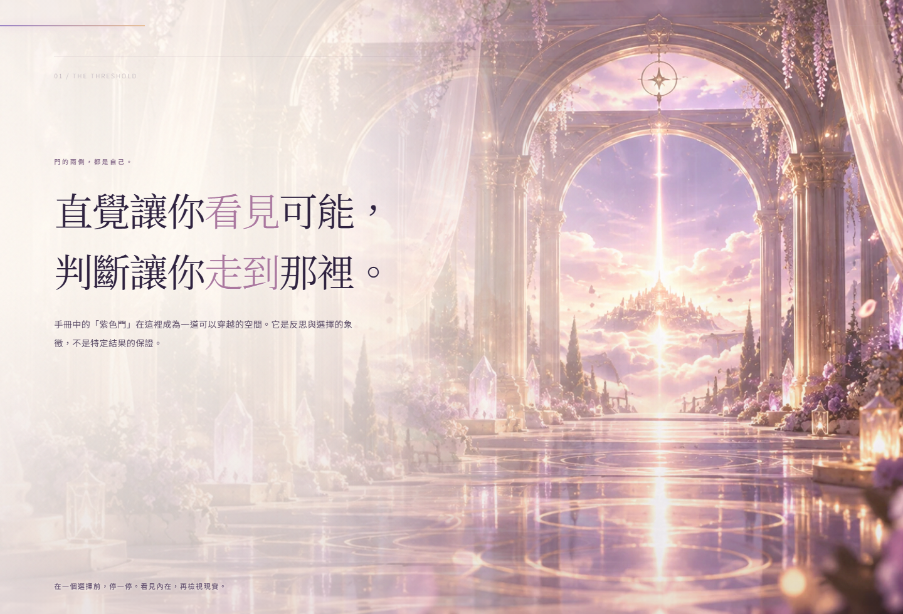
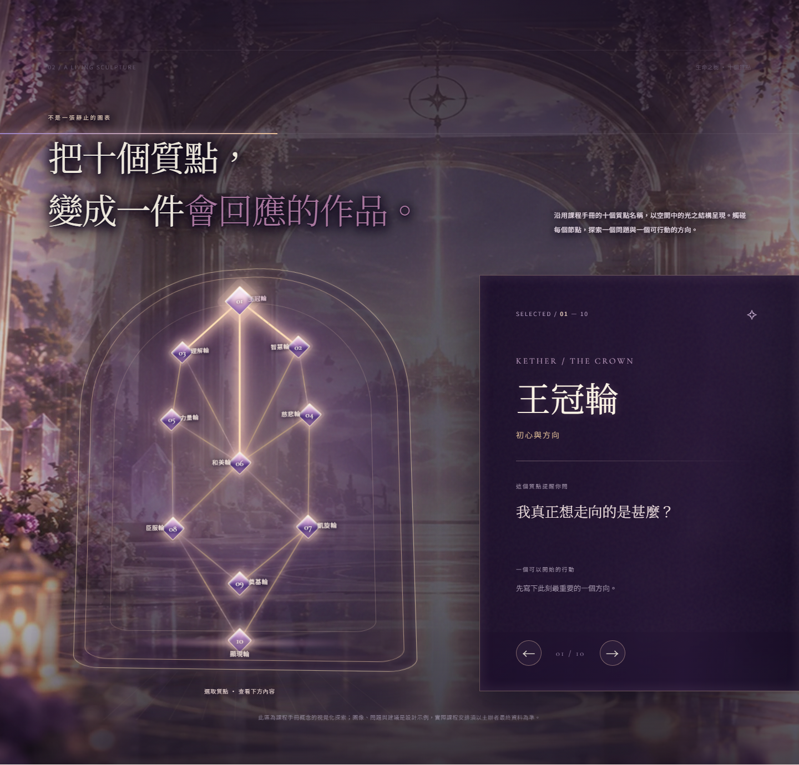
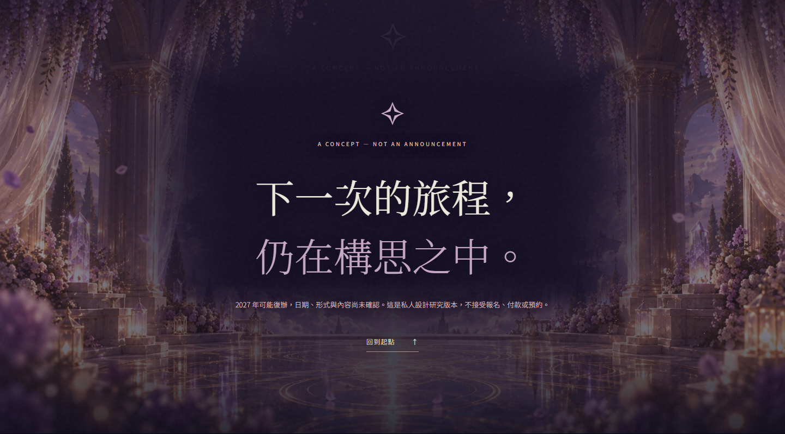
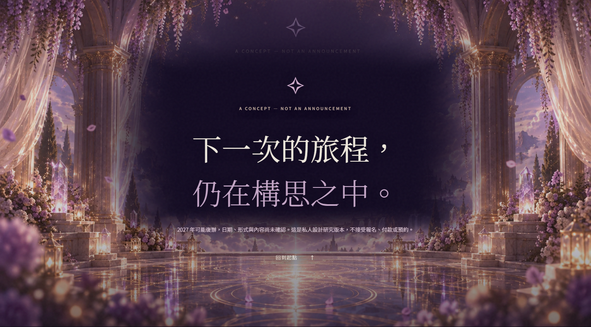
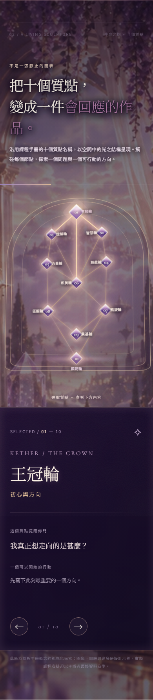

Threshold｜淺色版唔再變空白


Section 2 · Tree｜保留可操作質點，提升建築、材質同光


Closing｜唔再得一大片空紫色


手機｜同一個真網頁，獨立排版覆核


呢兩版都係 MSI 真 Chrome 截圖。R5 原有圖片、文案同互動繼承，R6 只修原 CSS：門廊用 full-bleed 建築同半透文字安全區；生命之樹提高場景可見度，改成玻璃裝置與金紫發光晶體；結尾加強柱廊及地面反射。原 JS 十個質點同矩陣三軸保持不變。
開啟 R6 真互動網頁



